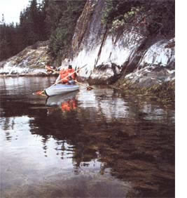
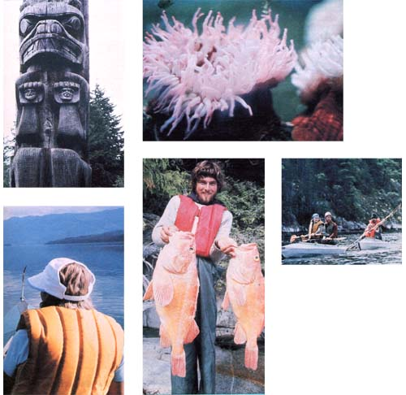

At least one hundred years ago, Indian canoes were traveling among the islands of the Queen Charlotte and Johnstone Straits off the northeast corner of Vancouver Island in British Columbia, Canada. Today, the rugged beauty of the waters cape there remains almost untouched, and small craft still ply through the channels . . . but now many of the boats are made of brightly colored vinyl, and brand-not family-names are emblazoned on their sides.
If you're in that neighborhood some summer and happen to see a group of five of these boats paddling along, with a blond, bearded man sitting in the stern of the leading vessel, you can be pretty sure that the fellow is Bruce Freeman . . . co-owner and -operator of Pacific Rim Expeditions. Bruce is out doing what the Indians did: looking for wildlife to shoot. But, unlike the old-time native Americans, he's scouting up suitable photographic subjects.
Bruce and his wife Gail manage their commercial venture from a base in Bellingham, Washington, and the area around the Straits is their favorite splashing ground. Every summer, they lead groups of ten (or so) on kayaking adventures about the Gilford Island cluster at the mouth of Knight Inlet (east of Queen Charlotte), the San Juan Islands off the coast of Washington, or the Prince William Sound in Alaska.
The two of them are particularly fond of the Gilford area because of its wild creatures: seals, dolphins, eagles, ravens, and-more rarely seen-orcas or mine whales. Bruce admits, too, that he's fascinated by the "spookiness" of the place . . . the feeling that the ghost of the local Kwakiutl Indian culture lingers on. Time and again, he and Gail find themselves drawn back to a deserted native village-Mamalilaculla-on an island in Elliott Passage, where totem poles and the remains of a long house (communal dwelling or council hall) still stand amid decaying homes built by missionaries at the turn of the century. To Bruce's mind, it's a happy circumstance that the shallow flats fronting the beach keep big boats-and gobs of rubbernecks-at bay, yet allow a few visiting kayaks to slip quietly in to shore.
If you were to sign up for one of Bruce's expeditions, you might paddle to that intriguing abandoned island. Then again, you could spend much of your time venturing into the woods of other desolate isles that dot the waterways . . . singing or whistling (on Gail's advice) in order not to startle any bears that happen to be nibbling on berries. When you're not feeling that energetic, you could laze on the shore, watching clouds drift by snowcapped mountains, or keeping a lookout for dolphins, seals, and whales.
BAG YOUR BOAT?
But let's suppose you'd rather explore the Vancouver Island area on your own, with a group of personal friends. In that case, you're going to have to figure out what kind of craft you'll want to use.
Conventional kayaks or canoes-your own or rented-will maneuver well in these waters, but Bruce and Gail Freeman carol the praises of Folbot folding portable boats, which are approximately 17 feet long and 39 inches wide, and weigh about 70 pounds. The amazing thing about these craft-which essentially consist of vinyl-covered boat skeletons-is that they can be taken apart and put into bags, one around four feet long, the other the size of a suitcase! The unusual kayaks also have sharply pointed hulls, which give such stability that it's easy for even a beginner to paddle them . . . along with plenty of room for gear and the necessary flotation bags. And although the idea of jockeying through the awesome arctic waves in a "collapsible novelty" may seem a little dismaying at first, the Folbot does make a good, seaworthy craft.
Whatever type of vessel you choose to paddle, give some sober thought to your safety by making sure that you know how to handle the boat and that it's in good shape for an extended journey. (Take a couple of daylong jaunts-say, around the San Juan Islands or in the southern part of Puget Sound-to get a feel for what you'll be coping with, before you set out on a major cruise.) Then be certain that you obtain a Johnstone Strait/ Western Portion map (Canadian, No. 3568) from a boat store and because disorienting fogs roll in quickly and thickly off British Columbia-a compass. Of course, you'll also need Coast Guard-approved personal flotation devices . . . a flashlight with extra batteries . . . a first aid kit . . . a tool kit . . . a watertight container of matches . . . and sturdy duct tape to patch leaks. And unfortunately, since it rains even in paradise, you should pack a parka, pants, and a hat designed for a deluge. (Speaking of moisture problems, double layers of plastic garbage bags-one inside the other-can be used to keep your stashed sleeping bag and extra clothes dry en route.) Above all, observe two basic safety rules: Always travel with at least one other boat, and never go out on the water without telling someone where you're going and when you expect to return.
Once you've assembled all of your clothes and your gear, acquired plenty of food for hungry paddlers, and obtained a fishing license (for information on how to do that, call the Fisheries and Oceans district office number: 604/666-3169), you're ready to go! Port McNeill (on the east side of Vancouver Island, north of the Campbell River) is a convenient point at which to start your voyage. It has stores where you can pick up last minute supplies . . . and the local citizens can tell you about riptides, the fogs that materi alize suddenly, or other weather conditions you may be likely to encounter. They may even advise you not to try crossing the channel to such islands as Mamalilaculla if heavy boating traffic and choppy water are expected. If so, you might prefer to hire a charter boat to transport you and your craft to a landing point. (One popular landing site is Swanson Island on Blackfish Sound.)
Naturally, you'll respect the privacy of others during your island-hopping . . . since, like you, they're trying to "get away from it all". If you find that someone has already set up camp where you land, then-weather permitting-move on! And when you leave your camp, there should be no garbage or litter in the water or on the ground to show that you were ever there. Then, silent as the ghosts of the Kwakiutl Indians that haunt these islets and waterways, you can glide through this wilderness Edenleaving only the wake of your boat behind you to the adventures that lie ahead.
|
 PHOTOS BY STEVE SATUSHEK |
 |
|